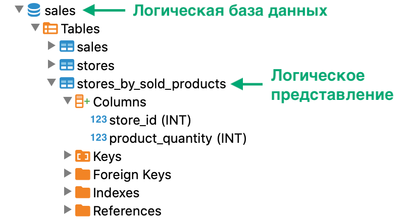

Логическое представление можно создать на основе данных одной или нескольких логических таблиц.
Чтобы создать логическое представление в логической БД, выполните запрос CREATE VIEW (см. пример ниже). При успешном выполнении запроса в логической схеме данных появляется новое логическое представление.
Чтобы проверить наличие логического представления, используйте любой из способов:
На рисунке ниже показан фрагмент дерева объектов SQL-клиента, которое содержит логическое представление
stores_by_sold_products.

Логическое представление в дереве объектов
-- выбор базы данных sales по умолчанию
USE sales
-- создание представления stores_by_sold_products
CREATE VIEW stores_by_sold_products AS
SELECT store_id, SUM(product_units) AS product_quantity
FROM sales.sales
GROUP BY store_id
ORDER BY product_amount DESC
LIMIT 30
-- проверка наличия логического представления stores_by_sold_products
SELECT
CASE
WHEN count(*) > 0 THEN 'представление существует'
ELSE 'представления не существует'
END
FROM INFORMATION_SCHEMA.tables
WHERE table_schema = 'SALES' AND table_name = 'STORES_BY_SOLD_PRODUCTS'